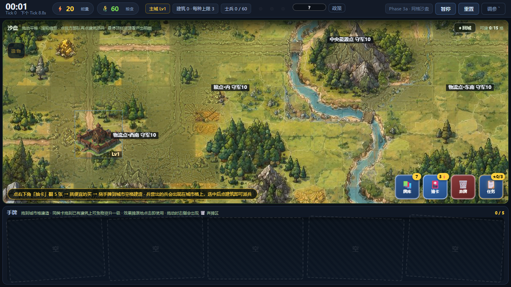
空地图、主城一座、两座木桥、9 个中立资源点。开局没有一条路——路要你自己修。
⚡20 · 🌾60 · 主城Lv1 · 建筑0 · 路2 · 兵0 · 资源点0
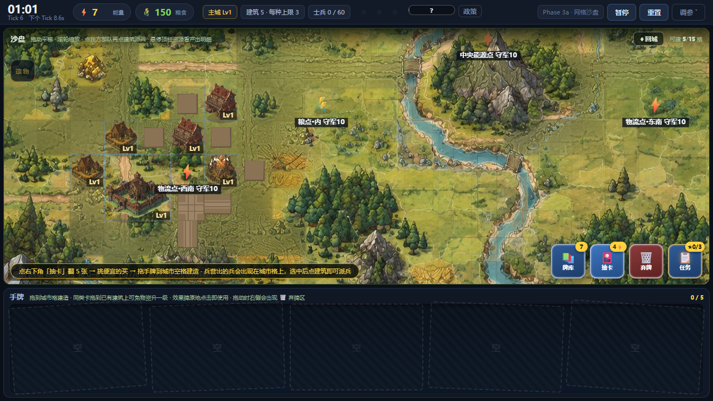
能量 7⚡ 粮食 150🌾 路 15 格 部队 0 人
⚡7 · 🌾150 · 主城Lv1 · 建筑8 · 路15 · 兵0 · 资源点0
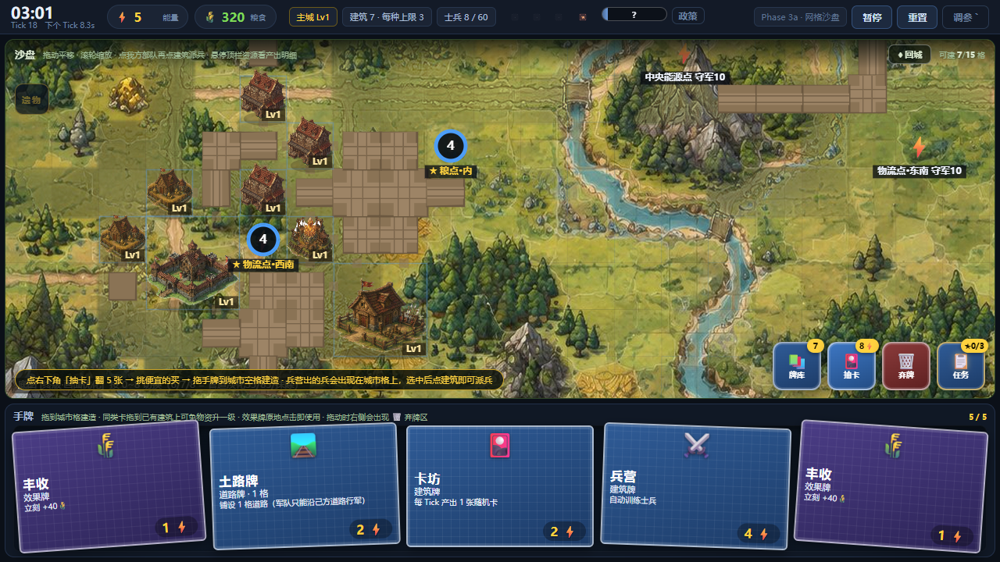
能量 5⚡ 粮食 320🌾 路 36 格 部队 8 人
⚡5 · 🌾320 · 主城Lv1 · 建筑14 · 路36 · 兵8 · 资源点2
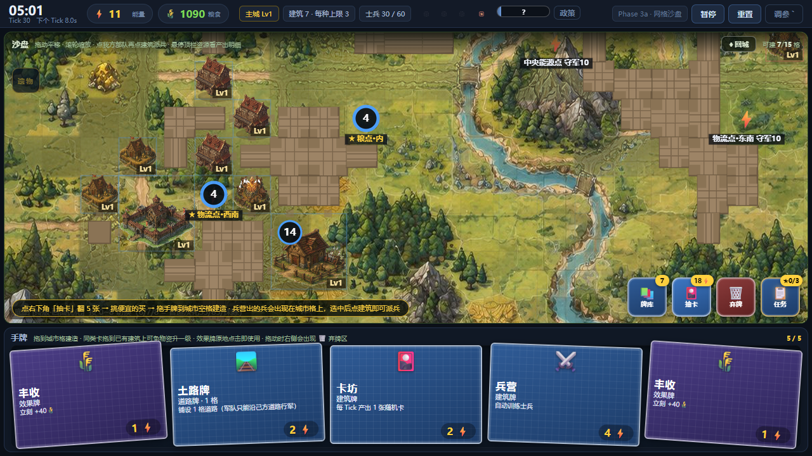
能量 11⚡ 粮食 1090🌾 路 58 格 部队 30 人
⚡11 · 🌾1090 · 主城Lv1 · 建筑17 · 路58 · 兵30 · 资源点4
能量 15⚡ 粮食 1635🌾 路 85 格 部队 58 人
⚡15 · 🌾1635 · 主城Lv1 · 建筑20 · 路85 · 兵58 · 资源点5
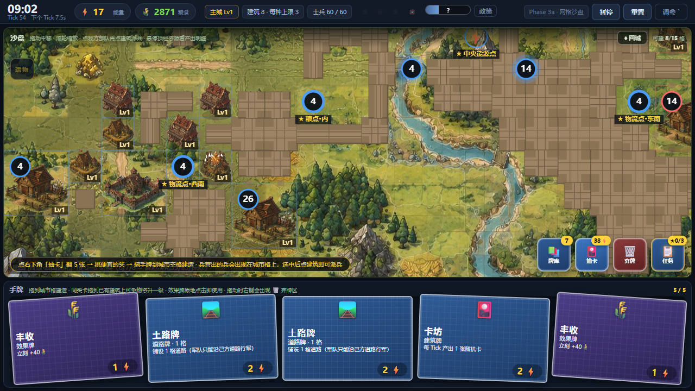
能量 17⚡ 粮食 2871🌾 路 114 格 部队 60 人
⚡17 · 🌾2871 · 主城Lv1 · 建筑24 · 路114 · 兵60 · 资源点7
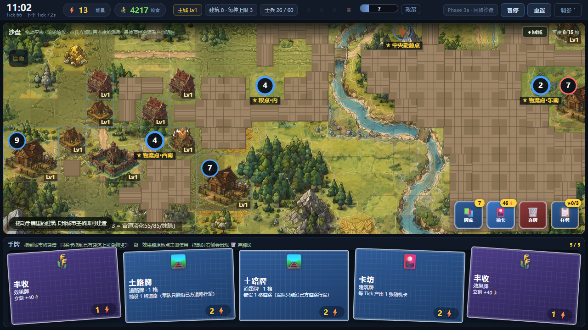
能量 13⚡ 粮食 4217🌾 路 144 格 部队 26 人
⚡13 · 🌾4217 · 主城Lv1 · 建筑24 · 路144 · 兵26 · 资源点8
能量 4⚡ 粮食 6317🌾 路 172 格 部队 80 人
⚡4 · 🌾6317 · 主城Lv2 · 建筑29 · 路172 · 兵80 · 资源点9
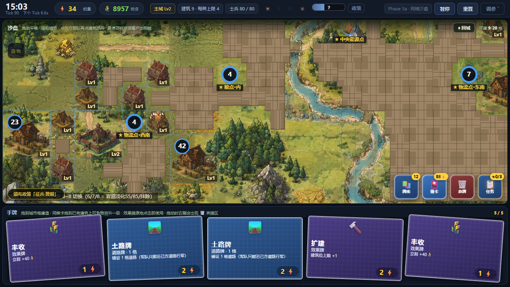
能量 34⚡ 粮食 8957🌾 路 192 格 部队 80 人
⚡34 · 🌾8957 · 主城Lv2 · 建筑29 · 路192 · 兵80 · 资源点9
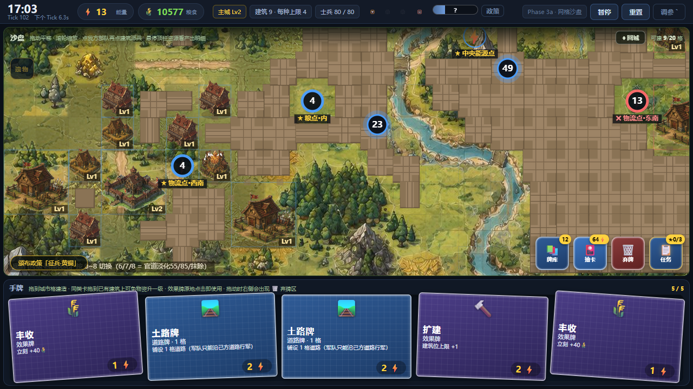
能量 13⚡ 粮食 10577🌾 路 214 格 部队 80 人
⚡13 · 🌾10577 · 主城Lv2 · 建筑32 · 路214 · 兵80 · 资源点8
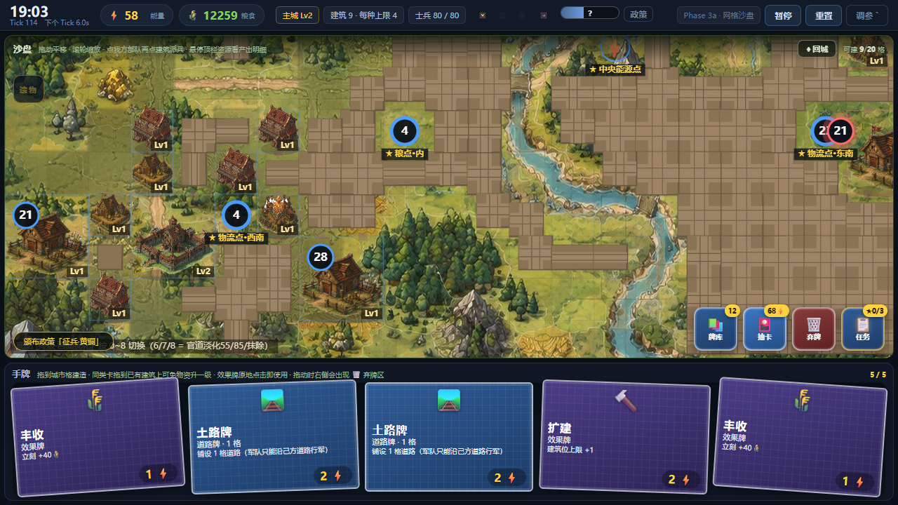
能量 59⚡ 粮食 12259🌾 路 235 格 部队 80 人
⚡59 · 🌾12259 · 主城Lv2 · 建筑32 · 路235 · 兵80 · 资源点9
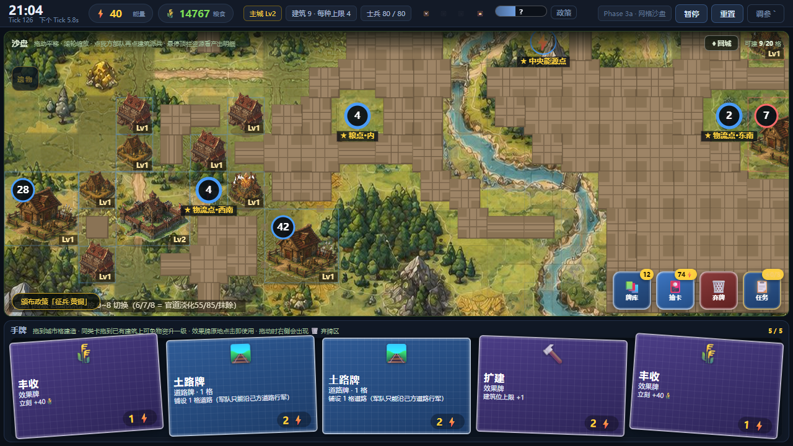
能量 41⚡ 粮食 14767🌾 路 246 格 部队 80 人
⚡41 · 🌾14767 · 主城Lv2 · 建筑32 · 路246 · 兵80 · 资源点9
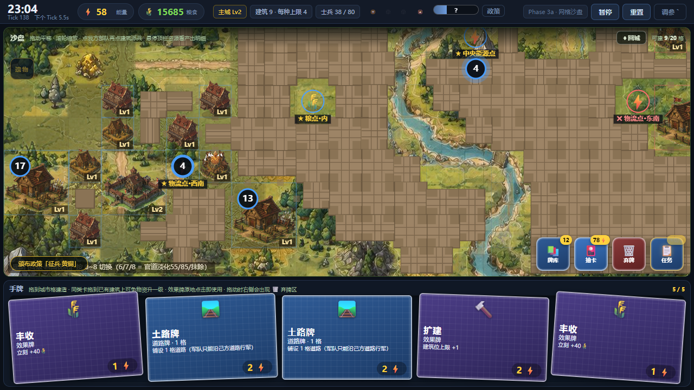
能量 59⚡ 粮食 15685🌾 路 266 格 部队 38 人
⚡59 · 🌾15685 · 主城Lv2 · 建筑32 · 路266 · 兵38 · 资源点6
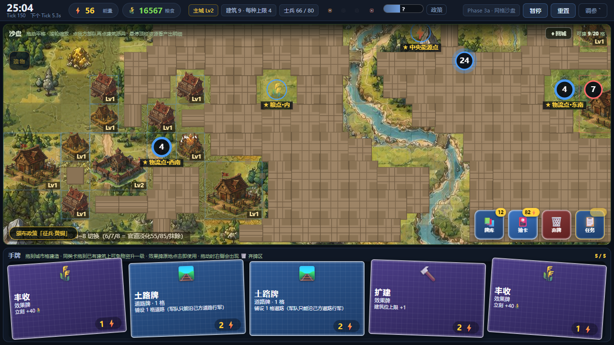
能量 57⚡ 粮食 16567🌾 路 286 格 部队 66 人
⚡57 · 🌾16567 · 主城Lv2 · 建筑32 · 路286 · 兵66 · 资源点8
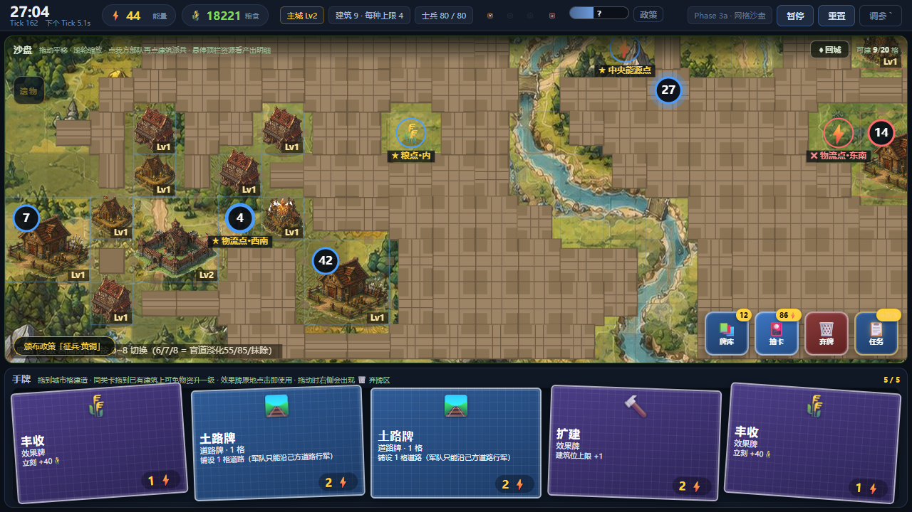
能量 45⚡ 粮食 18221🌾 路 301 格 部队 80 人
⚡45 · 🌾18221 · 主城Lv2 · 建筑32 · 路301 · 兵80 · 资源点8
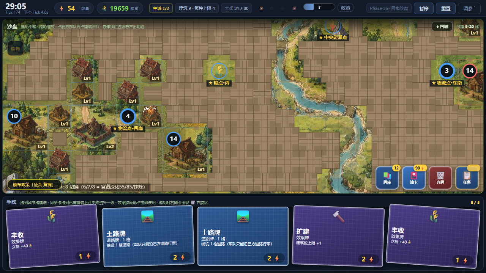
能量 55⚡ 粮食 19659🌾 路 313 格 部队 31 人
⚡55 · 🌾19659 · 主城Lv2 · 建筑32 · 路313 · 兵31 · 资源点9
用时 1800 秒 · 主城 Lv2 · 建筑 32 · 占领资源点 9 · 敌方主城剩 38 血
⚡53 · 🌾20654 · 主城Lv2 · 建筑32 · 路320 · 兵70 · 资源点9